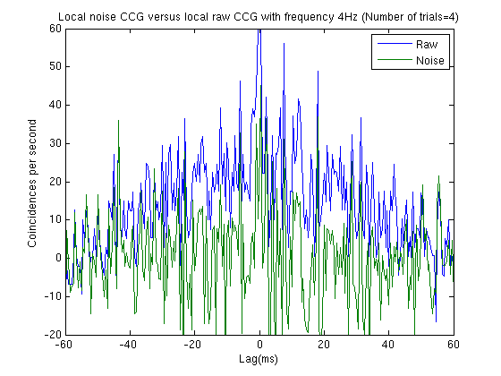
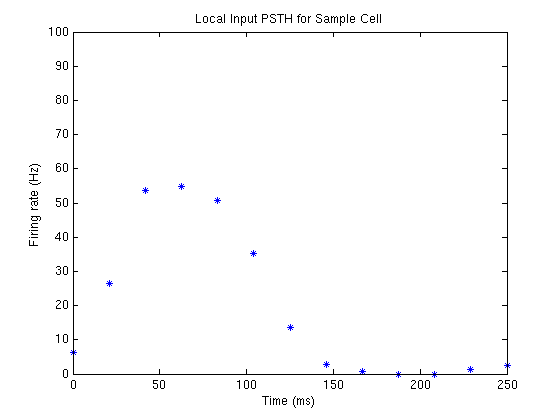
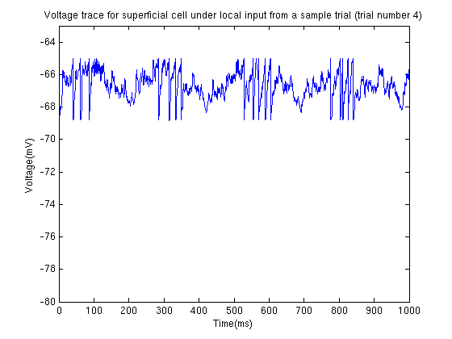
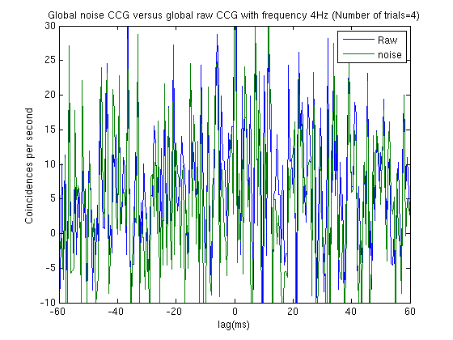
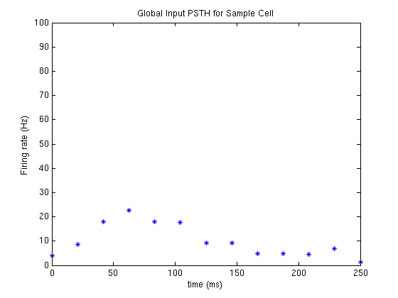
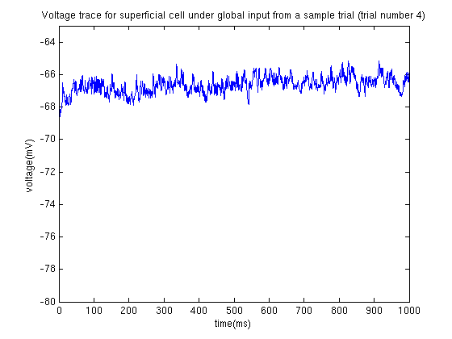

This is the readme for the matlab model associated with the paper: Simmonds B, Chacron MJ (2015) Activation of parallel fiber feedback by spatially diffuse stimuli simultaneously reduces signal and noise correlations via independent mechanisms in a cerebellum-like structure PLoS Comp Biol 11(1):e1004034 Usage: Expand the archive and then type controlScript at the matlab command prompt. In just under 7 mintes on an Intel(R) Xeon(R) CPU 5160 3.00GHz the following graphs should appear:      